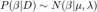
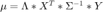
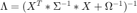
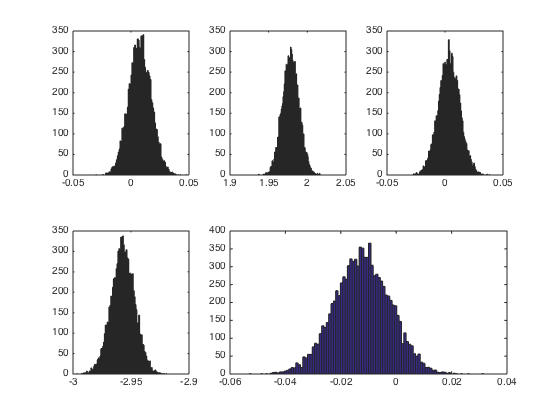
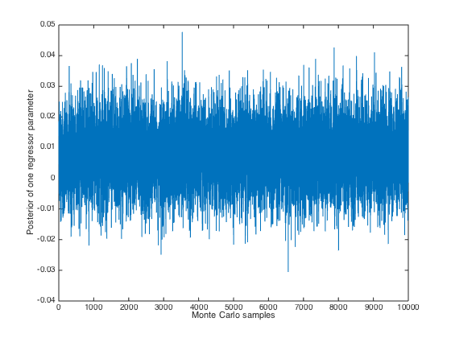

Contents
function bayesian_regression(X,Y,small_sigma_squared,eta_sqaured)
%%%%%%%%%%%%%%%%%%%%%%%%%%%%%%%%%%%%%%%%%%%%%%%%%%%%%%%%%%%%%%%%%%%%%%%%%%%%%%%%%%%%% % Name - bayesian_regression % Creation Date - 3rd Nov 2014 % Author: Soumya Banerjee % Website: https://sites.google.com/site/neelsoumya/ % % Description: % Function to do Bayesian regression % inspired by video on bayesian linear regression % https://www.youtube.com/watch?v=qz2U8coNwV4 % by mathematicalmonk on youtube % % Input: % X - matrix of predictors % Y - vector of responses % small_sigma_squared - standard deviation^2 (variance) for covariance matrix for Y % eta_sqaured - standard deviation^2 (variance) for covariance matrix for beta (regressors) % % Output: % 1) Vector of inferred regressors/parameters % 2) Histograms of inferred regressors/parameters % 3) Monte Carlo trace plots % % Assumptions - % % Example usage: % X = randn(100,5) % r = [0;2;0;-3;0] % only two nonzero coefficients % Y = X*r + randn(100,1)*.1 % small added noise % small_sigma_squared = 0.01 % eta_sqaured = 0.01 % bayesian_regression(X,Y,small_sigma_squared,eta_sqaured) % % License - BSD % % Acknowledgements - % Dedicated to my wife Joyeeta Ghose and my mother Kalyani % Banerjee % % Change History - % 3rd Nov 2014 - Creation by Soumya Banerjee % 20th Nov 2014 - Modified by Soumya Banerjee % no burn-in required; hence taken % out (thanks to suggestion by % Alireza Kashani) %%%%%%%%%%%%%%%%%%%%%%%%%%%%%%%%%%%%%%%%%%%%%%%%%%%%%%%%%%%%%%%%%%%%%%%%%%%%%%%%%%%%%% tic;
do Bayesian regression
beta is vector of regressors P(beta|D) ~ N(beta| mu, lambda) mu = lambda * X{transpose} * big_sigma^(-1) * Y lambda = (X{transpose} * inv(sigma) * X + inv(big_omega))^{-1}   
iNumMeasurements = size(X,1); iNumRegressors = size(X,2); big_sigma = small_sigma_squared * eye(iNumMeasurements); %a = 0.01 * eye(5); big_omega = eta_sqaured * eye(iNumRegressors); %b = 0.01 * eye(5); disp('covariance matrix and mean vector of posterior distribution') lambda = inv(X' * inv(big_sigma) * X + inv(big_omega)) mu = lambda * X' * inv(big_sigma) * Y % mvnrnd(MU,SIGMA) % mvnrnd(mu,lambda)
covariance matrix and mean vector of posterior distribution
lambda =
1.0e-03 *
0.0930 -0.0041 -0.0036 -0.0036 -0.0106
-0.0041 0.1179 -0.0003 0.0049 0.0176
-0.0036 -0.0003 0.0847 0.0016 -0.0006
-0.0036 0.0049 0.0016 0.1027 0.0018
-0.0106 0.0176 -0.0006 0.0018 0.1031
mu =
0.0076
1.9786
0.0035
-2.9569
-0.0123
draw samples from posterior
iNumIter = 10000; % number of samples for iCount=1:iNumIter w_vector_array(iCount,:) = [mvnrnd(mu,lambda)]; end
get mean from posterior
size(w_vector_array) disp('inferred parameter vector (mean)') [mean(w_vector_array(1:end,1)) mean(w_vector_array(1:end,2)) ... mean(w_vector_array(1:end,3)) mean(w_vector_array(1:end,4)) ... mean(w_vector_array(1:end,5)) ]
ans =
10000 5
inferred parameter vector (mean)
ans =
0.0077 1.9785 0.0035 -2.9569 -0.0122
plot histograms
if iNumRegressors == 5
iNumBins = 100;
figID = figure;
subplot(2,3,1)
hist(w_vector_array(1:end,1),iNumBins)
hold on
subplot(2,3,2)
hist(w_vector_array(1:end,2),iNumBins)
hold on
subplot(2,3,3)
hist(w_vector_array(1:end,3),iNumBins)
hold on
subplot(2,3,4)
hist(w_vector_array(1:end,4),iNumBins)
hold on
subplot(2,3,[5 6])
hist(w_vector_array(1:end,5),iNumBins)
hold off
 save plots
print(figID, '-djpeg', sprintf('bayesregression_parameters_hist%s.jpg', date));

plot Monte Carlo trace plots
figID_2 = figure
plot(w_vector_array(1:end,1))
xlabel('Monte Carlo samples'); ylabel('Posterior of one regressor parameter')
print(figID_2, '-djpeg', sprintf('mcmctrace_%s.jpg', date));
figID_2 =
Figure (2) with properties:
Number: 2
Name: ''
Color: [0.9400 0.9400 0.9400]
Position: [360 278 560 420]
Units: 'pixels'
Use GET to show all properties
 end
toc;
Elapsed time is 3.993003 seconds.